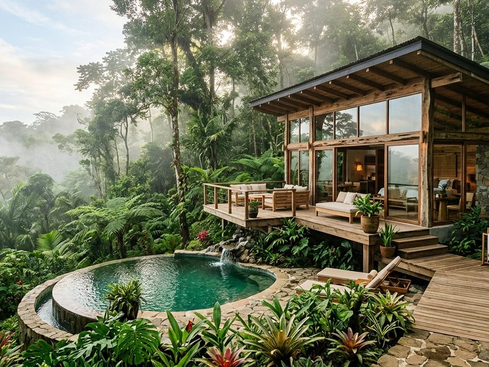
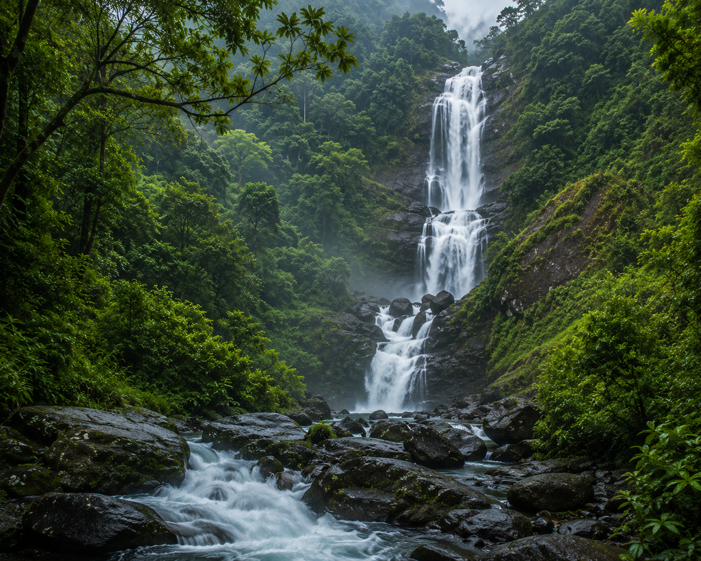

The Highlands Essence
Interactive Showcase
Tap the doors below to unfold the mystical elements of Idukki. Each click swings open the wooden sanctuary gates, revealing another hidden perspective of our ecosystem.
High-Range Luxury
A hand-picked collection of natural experiences and architectural wonders designed to reconnect you with the earth.
Watch the thick forest fog lazily crawl over the high-altitude peaks of Idukki directly from your private glass-walled observation deck.
A secluded, mossy pathway winds from the resort cabins directly to a pristine, roaring waterfall tucked deep inside our private forest reserve.
Wander through acres of rolling tea fields and ancient cardamom gardens, ending with a private leaf-plucking session and masterclass.
As temperature drops, gather around custom stone campfires for tribal acoustic melodies, warm barbecues, and hot spiced tea.
Private Sanctuaries
Six private architectural dwellings crafted from native timber and locally sourced stone, floating above the forest floor.

Elevated Living
Perched fifteen meters above the jungle ground on massive banyan supports, featuring panoramic views of the waterfall ravine and mist valleys.
Seamless Nature
Constructed with architectural smart-glass walls that mist-fog for privacy, nested inside the absolute heart of rolling tea estate gardens.
